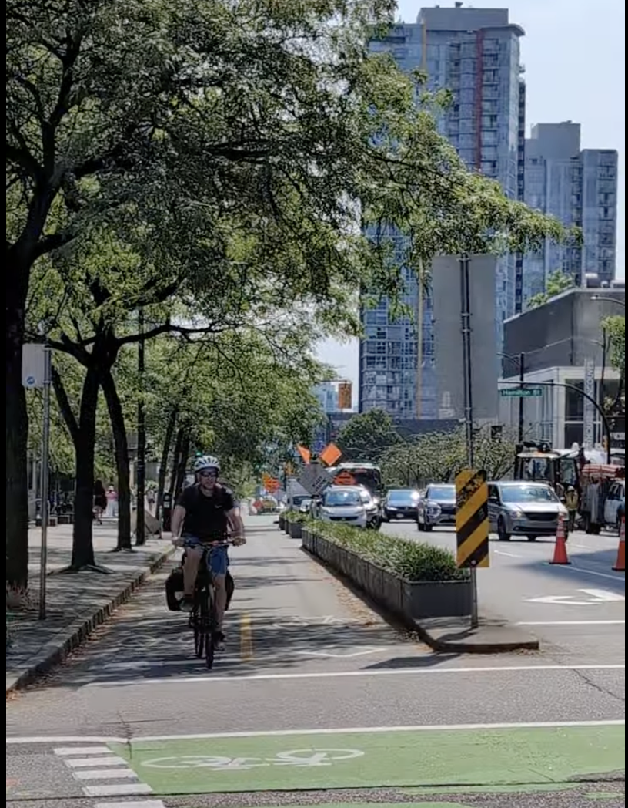

This site is about bridging the gap between policy, planning, and implementation — and making sure streets perform in real-world conditions.

Cities have strong policies. Climate plans, Vision Zero commitments, Complete Streets frameworks. But when projects get built, the outcomes often fall short.
Bike lanes flood. Sidewalks overheat. Trees fail. Infrastructure technically meets requirements — but doesn’t perform for people.
This site focuses on that gap — where good intentions break down in practice — and how to design systems that actually work.
The core idea is simple: infrastructure should be evaluated based on whether it works — not just whether it exists.
That means asking:
This lens comes from systems thinking, observability, and user-centered design — applied to the built environment.
April Webster is a software engineer, data scientist, and advocate for climate-resilient, people-first streets.
Her work sits at the intersection of transportation, data systems, and usability — focusing on how infrastructure performs in real-world conditions.
She has led regional efforts on green complete streets, coordinated multi-agency technical workshops, and advised on projects across the Bay Area.
Her approach combines: